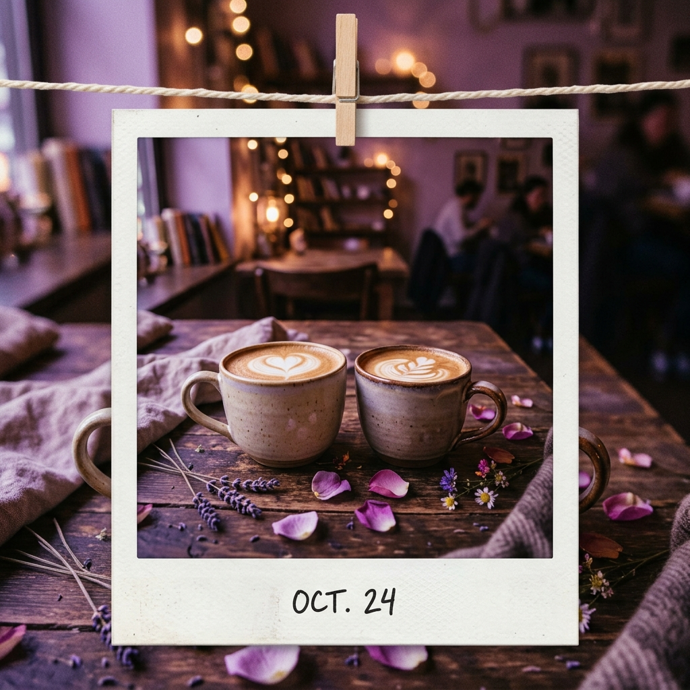

Cartas, música, recuerdos y desafíos guardados en un lugar creado con todo mi corazón para ti.
El instante en que todo cambió y cómo iluminaste mi vida desde el primer día.

Muchísimas razones que me hacen enamorarme de ti un poquito más a cada instante.
Fotografías, anécdotas y detalles que guardo como tesoros en el alma.
Para cuando estés triste, no puedas dormir o simplemente necesites un abrazo a la distancia.
¿Cuánto me conoces realmente? Trivia íntima con comodines y dilemas de pareja para poner a prueba nuestra telepatía.
Una invitación especial de Iván para crear nuestra banda sonora juntos.
Nuestros sueños, lugares por viajar y las promesas que cumpliremos.
Una carta profunda y sincera a corazón abierto dedicada a ti, Andrea.
Un secreto especial que solo podrás descubrir al llegar al final del camino.